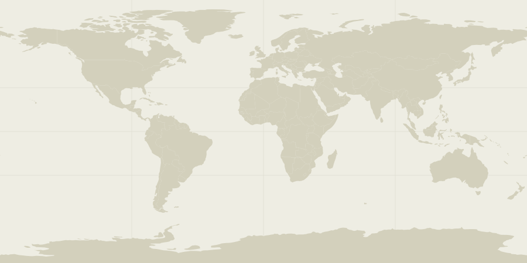

Find your next place
Narrow the list

A world worth understanding.
A closer look
Read the full UNESCO description
UNESCO · CC BY-SA 4.0. Dataset text, not visitor advice.
Look for
Take it with you
Prompts for looking at a photograph or thinking about the place, not a claim that you are there.
Words in the drawings
Opening the catalog…
Reference & map
Independent field guide. Not affiliated with UNESCO. UNESCO descriptions come from its official DataHub. Intro text is an excerpt; looking prompts are editorial, not historical claims or travel instructions.
Inscribed · Criteria
Read the official UNESCO listing ↗
The dot is the representative coordinate in the UNESCO dataset, not a surveyed boundary or entrance. Serial and transboundary properties can span many locations; a single point does not show their extent. Two properties have no representative point in this snapshot. Not a navigation map.
Catalog: UNESCO World Heritage List, updated 8 November 2026, retrieved 10 November 2026. All 1,273 properties in that snapshot. Text and adapted catalog data: CC BY-SA 4.0. Changes: selected fields, normalized format, shortened intro excerpts. Download the adapted data. No UNESCO endorsement.
Made with Natural Earth, public-domain 1:110m map data. Local SVG rendering, no remote tiles.